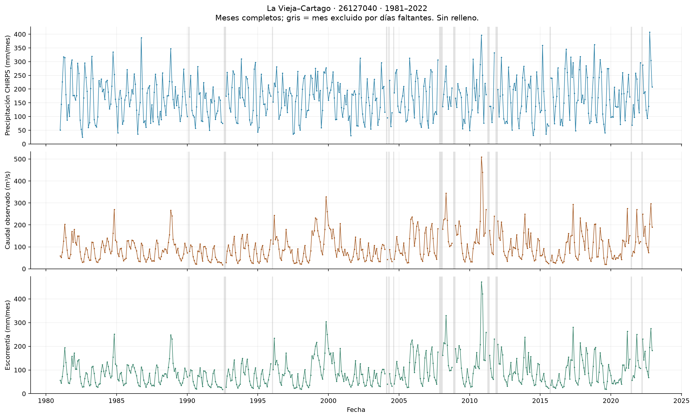
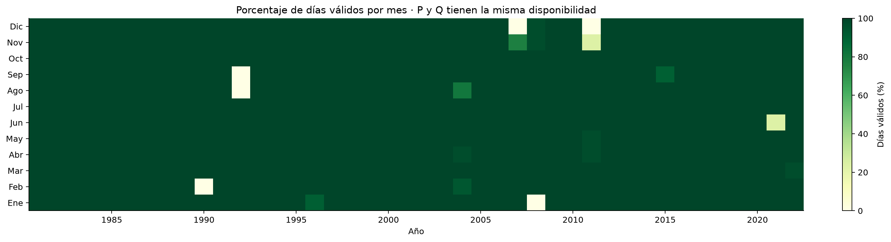
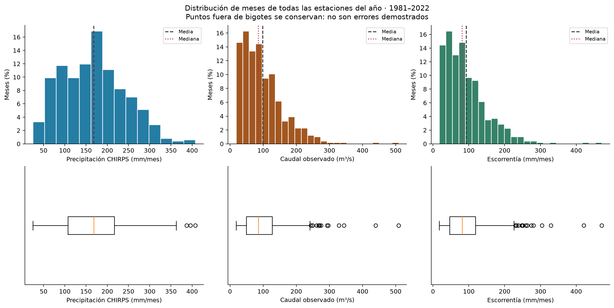
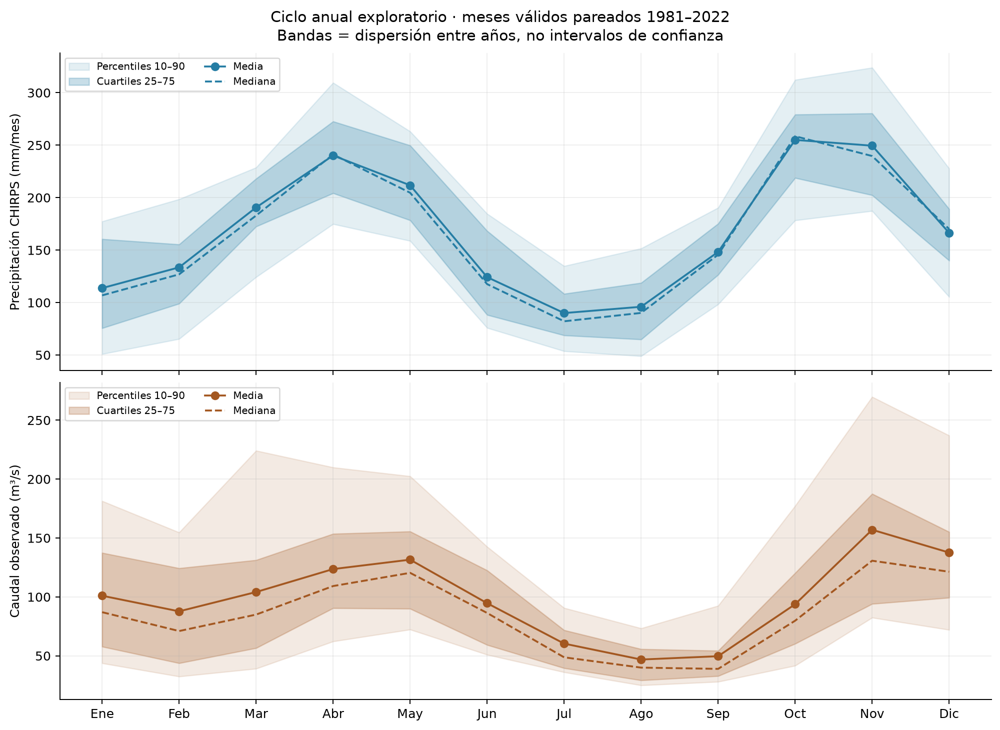
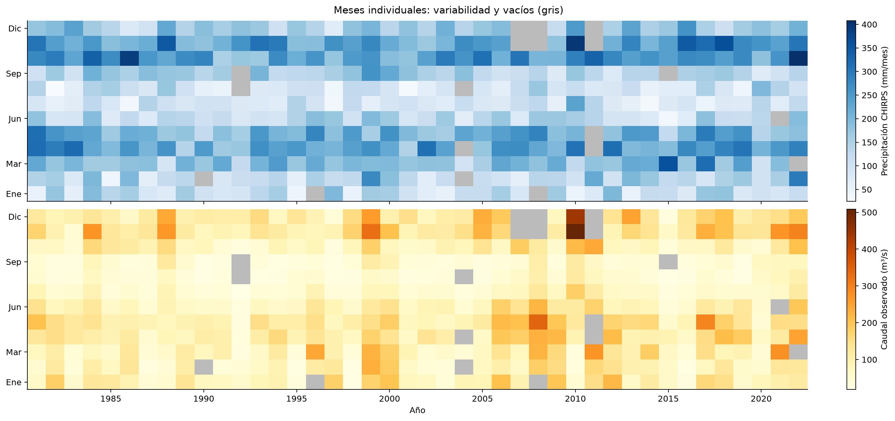
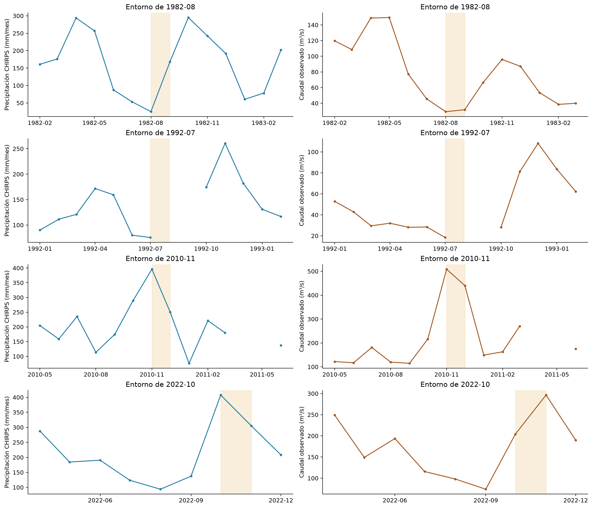

Estación 26127040 · 1981–2022 · Precipitación CHIRPS y caudal observado reportado por CAMELS
485 / 504
meses completos
255 días
ausentes (1,66 %)
19 meses
excluidos, sin relleno
Exploración inicial: IMERG y temperatura media siguen pendientes. Las estaciones de lluvia del catálogo no se han usado como registros observados en estas figuras. Los extremos y secuencias constantes son alertas que se conservan hasta comprobarlas.
La lluvia media mensual es 168,20 mm y el caudal medio de los meses válidos, 98,70 m³/s. Los dos máximos del ciclo de lluvia anteceden un mes a los máximos del caudal. Es una hipótesis inicial de régimen bimodal con respuesta retardada, no una atribución causal.
Se verificaron de manera independiente enero de 1981 y febrero bisiesto de 1992. Se encontraron ocho secuencias de caudal constante de al menos siete días; permanecen en el análisis y requieren metadatos.
Las franjas grises son meses excluidos; no se unen los valores a través de vacíos.

Los faltantes diarios se concentran en 19 meses; el hueco continuo más largo es de 62 días.

Q tiene una cola superior marcada. Los puntos fuera de los bigotes se conservan.

P tiene máximos locales en abril y octubre; Q en mayo y noviembre. Las bandas muestran variabilidad entre años, no incertidumbre de la media.

Esta figura conserva los años individuales; la climatología por sí sola los ocultaría.

Ventanas temporales de los mínimos y máximos de P y Q. Las franjas naranjas señalan el mes extremo.

| variable | unidad | meses_validos | media | mediana | desviacion_estandar | minimo | maximo | rango | q25 | q75 | IQR | p05 | p10 | p90 | p95 | asimetria | meses_cero | min_fecha | max_fecha |
|---|---|---|---|---|---|---|---|---|---|---|---|---|---|---|---|---|---|---|---|
| P_mm | mm/mes | 485 | 168.198 | 168.469 | 74.538 | 24.892 | 407.574 | 382.682 | 107.294 | 216.547 | 109.253 | 60.319 | 74.953 | 270.771 | 296.483 | 0.380 | 0 | 1982-08-01 | 2022-10-01 |
| Q_m3_s | m³/s | 485 | 98.701 | 85.545 | 64.348 | 18.368 | 508.767 | 490.399 | 49.157 | 127.042 | 77.885 | 29.185 | 34.131 | 181.192 | 221.008 | 1.698 | 0 | 1992-07-01 | 2010-11-01 |
| R_mm | mm/mes | 485 | 92.817 | 81.399 | 60.628 | 17.588 | 471.446 | 453.858 | 46.552 | 118.833 | 72.282 | 27.558 | 32.070 | 172.685 | 206.707 | 1.697 | 0 | 1992-07-01 | 2010-11-01 |
# La Vieja–Cartago: primera interpretación mensual Estación IDEAM 26127040. Periodo: enero de 1981 a diciembre de 2022. Área utilizada: 2797,19 km², reportada por CAMELS. Esta es la exploración inicial de precipitación y caudal; no es todavía el punto 1 completo, porque faltan IMERG y la temperatura media. ## 1. Fuentes y procedimiento Se leyó directamente el archivo `Hydromet_data_26127040.txt` del depósito [CAMELS-COL](https://doi.org/10.5281/zenodo.18794895). La precipitación corresponde a CHIRPS v2 promediado sobre la cuenca, no a una estación pluviométrica local. El caudal se reporta como observado en la estación de salida. El archivo no incluye banderas diarias que permitan certificar la ausencia de reconstrucciones previas. La existencia de numerosas estaciones terrestres en el catálogo no significa que sus registros se hayan incorporado a esta exploración. Primero se reconstruyó el calendario de 15.340 días, incluidos los bisiestos. Los días omitidos permanecen como valores ausentes. Se conservó un mes únicamente cuando todos sus días eran válidos para la variable correspondiente: precipitación mensual = suma diaria; caudal mensual = media diaria. No se rellenaron ni prorratearon meses y se conservaron los ceros. La lámina mensual de escorrentía se obtuvo mediante `R = 86.4 / 2797.19 × suma(Q_diario)`, en mm/mes. Se comprobó también su equivalencia con `Q_medio × días_del_mes × 86.4 / área`. R es una transformación de Q, no una medición independiente. ## 2. Disponibilidad y problemas detectados - El archivo contiene **15.085 filas y omite 255 días**, equivalentes al **1,6623 %** del calendario completo. En P y Q faltan exactamente las mismas fechas. Esto describe el archivo ensamblado CAMELS; no demuestra que CHIRPS original carezca de esas fechas. - Quedan **485 meses completos de 504 (96,23 %)**. Los **19 meses excluidos** siguen apareciendo como vacíos en la serie; las franjas grises de la figura 1 los identifican. - Los vacíos más largos son **diciembre de 2007–enero de 2008 (62 días)**, **agosto–septiembre de 1992 (61 días)** y **8 de noviembre–31 de diciembre de 2011 (54 días)**. El resto está documentado en `intervalos_faltantes.csv` y `disponibilidad_mensual.csv`. - No se encontraron fechas duplicadas o desordenadas, P/Q negativos o no finitos, ni Tmin mayor que Tmax. Esto es control básico, no certificación de homogeneidad o exactitud. - Se detectaron **ocho secuencias de caudal exactamente constante de siete o más días**. La más larga es de **11 días, 16–26 de julio de 2004, con 28,6 m³/s**. Se conservan: pueden relacionarse con redondeo, persistencia real o procesamiento previo. Se necesitan metadatos para distinguir esas posibilidades. - Los diagramas de caja señalan **3 meses extremos de P, 15 de Q y 17 de R**, mediante bigotes de 1,5 IQR. Son alertas exploratorias que mezclan meses de distintas estaciones del año; ninguno se eliminó por ese criterio. - El cribado de cambios mensuales por un factor de al menos cinco detectó dos aumentos de P: septiembre de 1982 y septiembre de 2001. Coinciden con una transición hacia meses más lluviosos, pero esto no demuestra su exactitud. No detectó cambios de ese tamaño en Q. Este cribado no es una prueba de rupturas de homogeneidad. La disponibilidad no es uniforme entre meses calendario: el ciclo anual usa entre **39 y 42 años por mes**. El hecho de que varios vacíos afecten temporadas lluviosas puede sesgar la caracterización de extremos; por ello se reporta el número de años y no se asume que los faltantes sean aleatorios. ## 3. Estadística descriptiva Las cifras siguientes utilizan los mismos 485 meses válidos de P y Q. La media de Q es la media aritmética de los promedios mensuales, no el promedio de todos los días ponderado por duración del mes. | Estadístico | P (mm/mes) | Q (m³/s) | R (mm/mes) | |---|---:|---:|---:| | Media | 168,20 | 98,70 | 92,82 | | Mediana | 168,47 | 85,55 | 81,40 | | Desviación estándar muestral | 74,54 | 64,35 | 60,63 | | Mínimo | 24,89 | 18,37 | 17,59 | | Máximo | 407,57 | 508,77 | 471,45 | | Cuartil 25 | 107,29 | 49,16 | 46,55 | | Cuartil 75 | 216,55 | 127,04 | 118,83 | El Excel incluye rango, IQR y percentiles 5, 10, 90 y 95. Se empleó desviación muestral (`ddof=1`) y percentiles con interpolación lineal. Los histogramas usan intervalos Freedman–Diaconis y porcentaje de meses. No hay meses completos con P o Q iguales a cero, aunque sí hay días sin lluvia. En P, media y mediana son cercanas. En Q la media supera la mediana en unos **13,16 m³/s**, y la asimetría es **1,70**: los meses de caudal alto elevan el promedio. La mediana describe mejor el centro resistente a esos extremos, aunque una condición típica depende también del mes calendario. La dispersión de estas tablas no es un intervalo de confianza ni una cuantificación de errores de medición. ## 4. Lectura cronológica y revisión de extremos Las figuras 1 y 5 muestran alternancia estacional y diferencias apreciables entre años. El periodo de finales de 2010 destaca por caudales persistentemente altos: **508,77 m³/s en noviembre y 439,72 m³/s en diciembre**. No corresponde a un único día alto: los 30 caudales diarios de noviembre van de **262,0 a 880,2 m³/s**, con mediana **514,75 m³/s**. Ese mes registra además **396,03 mm** de lluvia. Su coherencia interna respalda conservarlo, pero no verifica de forma independiente la medición ni permite atribuir el episodio a ENSO. El máximo mensual de P es **octubre de 2022, 407,57 mm**, y su mínimo es **agosto de 1982, 24,89 mm**. El mínimo de Q es **julio de 1992, 18,37 m³/s**. Los mínimos de precipitación y caudal de todo el registro no coinciden; no debe calcularse un desfase usando esos extremos de años diferentes. La figura 6 muestra ventanas de aproximadamente un año alrededor de los extremos de ambas variables. El periodo posterior al caudal mínimo de julio de 1992 presenta dos meses totalmente ausentes, por lo que no se puede describir su recuperación inmediata. Se observan agrupaciones de meses de Q bajo, por ejemplo en 2015–2016, pero no se ha aplicado una definición formal de sequía ni una prueba de tendencia. No hay fundamento en estas gráficas para afirmar un aumento o disminución sostenido del caudal a largo plazo. Eso requiere los análisis de tendencias, dependencia temporal y homogeneidad del punto 3. ## 5. Hipótesis inicial del régimen La climatología exploratoria (figura 4) muestra **dos máximos locales de lluvia**, en **abril (240,16 mm)** y **octubre (255,03 mm)**, separados por un mínimo en **julio (89,99 mm)**. Por máximo local se entiende un valor mayor que el de sus dos meses vecinos en el ciclo anual. El máximo de octubre equivale a unas **2,83 veces** la media de julio. Esta evidencia sugiere inicialmente un **régimen pluvial bimodal**, pendiente de comprobar su estabilidad entre años y subperiodos. El caudal presenta máximos locales en **mayo (131,62 m³/s)** y **noviembre (157,01 m³/s)**, un mes después de cada pico de P; el mínimo ocurre en **agosto (46,85 m³/s)**. Este es un desfase de picos climatológicos a resolución mensual, no una estimación del tiempo de viaje del agua ni un resultado de correlación con rezagos. El [POMCA del río La Vieja, capítulo 3, Clima](https://www.cvc.gov.co/sites/default/files/Planes_y_Programas/Planes_de_Ordenacion_y_Manejo_de_Cuencas_Hidrografica/La%20Vieja%20-%20POMCA%20en%20Ajuste/Fase%20Diagnostico/3_CapituloI_Diagnostico_Clima.pdf), estudio 2017 alojado por CVC, sección 3.3 (p. impresa 20; PDF 24) relaciona las dos temporadas lluviosas regionales con la migración de la ZCIT. Su tabla 3.8 (p. impresa 36; PDF 40) también muestra dos máximos de precipitación media en abril y octubre. Es evidencia regional compatible con nuestro ciclo; no valida directamente CHIRPS, pues las fuentes, periodos y delimitación pueden diferir. **Hipótesis a contrastar:** el ciclo de lluvia regional aporta dos temporadas de recarga y la respuesta de la cuenca prolonga la salida por el río hacia los meses siguientes. El almacenamiento en suelo/subsuelo es un mecanismo posible, no demostrado. La agregación mensual, el reparto espacial de lluvia, las extracciones y la regulación son explicaciones alternativas o adicionales. Para distinguirlas se necesitan antecedentes locales, comparación de productos y análisis de rezagos con series originales y anomalías. En **44 meses** R supera P. No se etiquetan como errores: pueden intervenir agua almacenada, intercambios, sesgos de precipitación/caudal o incertidumbre del área. La razón entre sumas de R y P en los 485 meses pareados es **0,552**, pero no es un balance cerrado de los 42 años, pues omite meses. Tampoco se interpreta P−R como evapotranspiración. ## 6. Comprobaciones y sensibilidad La agregación se verificó con sumas independientes de Python, además de pandas: - **Enero de 1981:** 31 días; P = **50,945 mm**; suma de Q diario = **1829,3**; Q medio = **59,0097 m³/s**; volumen = **158.051.520 m³**; R = **56,5037 mm**. - **Febrero de 1992:** 29 días; P = **111,351 mm**; Q medio = **42,8724 m³/s**; R = **38,4032 mm**. Se verificó explícitamente el año bisiesto. Los cálculos coinciden con las series exportadas. El uso de una suma de caudales diarios se entiende como un paso intermedio: para obtener volumen se multiplica por 86.400 segundos por día. Como sensibilidad, permitir meses de Q con al menos 90 % de días elevaría la muestra a **494 meses** y la media a **100,91 m³/s**, frente a 98,70 con el criterio estricto (cambio de alrededor del **2,24 %**). Esto no valida los días faltantes ni justifica completar P. Se conserva el criterio del 100 % como análisis principal. ## 7. Alcance y próximos datos necesarios Se completó la primera exploración de P/Q y la conversión a R, con figuras, estadísticas, auditoría y una hipótesis inicial. Quedan pendientes la precipitación IMERG real (el intento de acceso requirió autenticación Earthdata), la temperatura media mensual, la comparación de fuentes y el desarrollo completo de la climatología del apartado 1.5. No se sustituyeron descargas fallidas por datos simulados. La lámina R depende del área elegida. El cálculo geodésico previo del polígono produjo aproximadamente 2780,18 km², frente a 2797,19 en los atributos CAMELS: diferencia cercana al 0,61 %. Se mantiene por consistencia el área CAMELS y se deja pendiente el contraste cartográfico; usar el área geodésica elevaría R aproximadamente 0,61 %. El grupo debe revisar las alertas con información de estación, leer las fuentes originales y decidir si conserva el criterio de completitud. El código permite regenerar los resultados sin alterar los datos originales. ## Reproducción y uso de IA Ejecutar `python seleccion_cuenca/scripts/08_exploracion_mensual_la_vieja.py`. Requiere el ZIP original guardado en `seleccion_cuenca/datos/`, Python, pandas, numpy, matplotlib y openpyxl. El informe visual se genera con `scripts/09_informe_exploracion.py`. Las figuras se guardan en PNG y PDF, y las tablas en CSV y Excel. La IA apoyó la programación, el control aritmético, la lectura del capítulo regional y la redacción de esta interpretación preliminar. Se verificaron fechas, completitud, conservación de vacíos, conversiones de dos meses, coherencia entre R y Q y legibilidad de figuras. No se verificaron externamente los aforos ni los registros individuales de estaciones meteorológicas. Las hipótesis físicas permanecen sujetas a revisión del grupo.
"""Punto 1, primera exploracion P/Q: originales, auditoria, agregacion y figuras.
Ejecutar desde cualquier carpeta. Sin rellenos, sin eliminacion por ser extremo.
"""
from pathlib import Path
import io, json, math, zipfile, hashlib
import numpy as np
import pandas as pd
import matplotlib
matplotlib.use('Agg')
import matplotlib.pyplot as plt
import matplotlib.dates as mdates
from openpyxl.styles import Font, PatternFill
ROOT=Path(__file__).resolve().parents[1]
OUT=ROOT/'la_vieja'/'punto_1'
OUT.mkdir(parents=True,exist_ok=True)
FIG=OUT/'figuras'
FIG.mkdir(exist_ok=True)
AREA=2797.19
CODE=26127040
plt.rcParams.update({'font.size':10,'axes.spines.top':False,'axes.spines.right':False,'figure.dpi':110})
LABELS={'P_mm':'Precipitación CHIRPS (mm/mes)','Q_m3_s':'Caudal observado (m³/s)','R_mm':'Escorrentía (mm/mes)'}
COLORS={'P_mm':'#257da4','Q_m3_s':'#a35720','R_mm':'#368269'}
NAMES=['Ene','Feb','Mar','Abr','May','Jun','Jul','Ago','Sep','Oct','Nov','Dic']
# 1. Lectura directa del original y auditoria de fechas y valores.
archive=ROOT/'datos'/'04_CAMELS_COL_Hydrometeorological_data.zip'
with zipfile.ZipFile(archive) as z:
member=next(n for n in z.namelist() if str(CODE) in n)
data=z.read(member)
raw=pd.read_csv(io.BytesIO(data),sep='\t')
dates=pd.to_datetime(raw.pop('Fecha'),format='%d/%m/%Y',errors='raise')
duplicates=int(dates.duplicated().sum())
if duplicates:
raise ValueError('Fechas duplicadas; resolver antes de agregar')
ordered=bool(dates.is_monotonic_increasing)
raw.index=pd.DatetimeIndex(dates,name='fecha')
raw=raw.apply(pd.to_numeric,errors='raise').sort_index()
calendar=pd.date_range('1981-01-01','2022-12-31',freq='D',name='fecha')
if not raw.index.isin(calendar).all():
raise ValueError('Fechas fuera del periodo declarado')
daily=raw.reindex(calendar)
issues=[]
for col in raw:
finite=np.isfinite(daily[col])
invalid=(daily[col].notna() & ~finite)
if col in ['Precipitacion','Caudal']:
invalid |= daily[col].lt(0)
for date,value in daily.loc[invalid,col].items():
issues.append({'fecha':date,'variable':col,'valor':value,'decision':'No valido; se conserva en original y se excluye de la agregacion'})
daily.loc[invalid,col]=np.nan
inverted=int((daily.Temperatura_minima>daily.Temperatura_maxima).sum())
pd.DataFrame(issues,columns=['fecha','variable','valor','decision']).to_csv(OUT/'valores_invalidos.csv',index=False)
daily.to_csv(OUT/'diario_calendario_completo.csv',index_label='fecha')
def intervals(mask):
"""Intervalos consecutivos en calendario real; no concatenar dias ausentes."""
groups=mask.ne(mask.shift()).cumsum()
return [{'inicio':x.index[0], 'fin':x.index[-1], 'dias':len(x)} for _,x in mask[mask].groupby(groups[mask])]
gap_rows=[]
for col in ['Precipitacion','Caudal']:
gap_rows.extend(dict(variable=col,**v) for v in intervals(daily[col].isna()))
gaps=pd.DataFrame(gap_rows)
gaps.to_csv(OUT/'intervalos_faltantes.csv',index=False)
# 2. Agregacion mensual estricta, con 100 % de dias validos por variable.
counts=daily.resample('MS').count()
expected=pd.Series(counts.index.days_in_month,index=counts.index,name='dias_esperados')
complete=counts.eq(expected,axis=0)
monthly=pd.DataFrame(index=counts.index)
monthly['P_mm']=daily.Precipitacion.resample('MS').sum(min_count=1).where(complete.Precipitacion)
monthly['Q_m3_s']=daily.Caudal.resample('MS').mean().where(complete.Caudal)
monthly['R_mm']=(86.4/AREA*daily.Caudal.resample('MS').sum(min_count=1)).where(complete.Caudal)
monthly['Tmin_media_C']=daily.Temperatura_minima.resample('MS').mean().where(complete.Temperatura_minima)
monthly['Tmax_media_C']=daily.Temperatura_maxima.resample('MS').mean().where(complete.Temperatura_maxima)
monthly.index.name='mes'
availability=pd.DataFrame({'dias_esperados':expected})
for col,short in [('Precipitacion','P'),('Caudal','Q'),('Temperatura_minima','Tmin'),('Temperatura_maxima','Tmax')]:
availability[f'dias_validos_{short}']=counts[col]
availability[f'dias_faltantes_{short}']=expected-counts[col]
availability[f'mes_retenido_{short}']=complete[col]
availability['P_Q_pareados']=monthly[['P_mm','Q_m3_s']].notna().all(axis=1)
monthly.to_csv(OUT/'series_mensuales.csv')
availability.to_csv(OUT/'disponibilidad_mensual.csv',index_label='mes')
availability[~availability.P_Q_pareados].to_csv(OUT/'meses_excluidos.csv',index_label='mes')
yearly=availability.groupby(availability.index.year).sum()
yearly.to_csv(OUT/'disponibilidad_anual.csv',index_label='ano')
# 3. Comprobacion independiente con sumas de Python (incluye febrero bisiesto).
checks=[]
for period in ['1981-01','1992-02']:
block=daily.loc[period]
if block[['Precipitacion','Caudal']].isna().any().any():
raise ValueError(f'Mes de comprobacion incompleto: {period}')
p=math.fsum(block.Precipitacion.tolist())
qsum=math.fsum(block.Caudal.tolist())
q=qsum/len(block)
volume=qsum*86400
r=volume/(AREA*1e6)*1000
measured=monthly.loc[pd.Timestamp(period+'-01')]
for variable,a,b in [('P',p,measured.P_mm),('Q',q,measured.Q_m3_s),('R',r,measured.R_mm)]:
assert math.isclose(a,b,rel_tol=1e-12,abs_tol=1e-10),(period,variable,a,b)
checks.append({'mes':period,'dias':len(block),'suma_P_diaria_mm':p,'suma_Q_diaria':qsum,'Q_media_m3_s':q,'volumen_m3':volume,'area_km2':AREA,'R_mm':r,'coincide':True})
manual=pd.DataFrame(checks)
manual.to_csv(OUT/'comprobacion_manual.csv',index=False)
assert np.allclose(monthly.R_mm,monthly.Q_m3_s*expected*86.4/AREA,equal_nan=True)
# 4. Estadistica descriptiva. Percentiles lineales, desviacion muestral ddof=1.
stats=[]
extremes=[]
box_flags=[]
for var in LABELS:
s=monthly[var].dropna()
quant=s.quantile([.05,.10,.25,.5,.75,.90,.95],interpolation='linear')
q1,q3=quant.loc[.25],quant.loc[.75]
iqr=q3-q1
stats.append({'variable':var,'unidad':LABELS[var].split('(')[-1].rstrip(')'), 'meses_validos':len(s),'media':s.mean(),'mediana':s.median(),'desviacion_estandar':s.std(ddof=1),'minimo':s.min(),'maximo':s.max(),'rango':s.max()-s.min(),'q25':q1,'q75':q3,'IQR':iqr,'p05':quant.loc[.05],'p10':quant.loc[.10],'p90':quant.loc[.90],'p95':quant.loc[.95],'asimetria':s.skew(),'meses_cero':int(s.eq(0).sum()),'min_fecha':str(s.idxmin().date()),'max_fecha':str(s.idxmax().date())})
for direction,values in [('minimo',s.nsmallest(5)),('maximo',s.nlargest(5))]:
for date,value in values.items():
extremes.append({'variable':var,'tipo':direction,'mes':date,'valor':value,'P_mm':monthly.loc[date,'P_mm'],'Q_m3_s':monthly.loc[date,'Q_m3_s'],'R_mm':monthly.loc[date,'R_mm']})
for date,value in s[(s<q1-1.5*iqr)|(s>q3+1.5*iqr)].items():
box_flags.append({'variable':var,'mes':date,'valor':value,'criterio':'Fuera de Q1-1.5 IQR o Q3+1.5 IQR global','decision':'Conservar; alerta exploratoria, no error demostrado'})
statistics=pd.DataFrame(stats).set_index('variable')
statistics.to_csv(OUT/'estadistica_descriptiva.csv')
extremes=pd.DataFrame(extremes)
extremes.to_csv(OUT/'meses_extremos.csv',index=False)
box_flags=pd.DataFrame(box_flags)
box_flags.to_csv(OUT/'alertas_diagramas_caja.csv',index=False)
# Secuencias constantes de al menos 7 dias: ceros de lluvia se separan de alertas.
runs=[]
for col in ['Precipitacion','Caudal']:
s=daily[col]
group=(s.ne(s.shift())|s.isna()).cumsum()
for _,x in s.dropna().groupby(group[s.notna()]):
if len(x)>=7:
runs.append({'variable':col,'inicio':x.index[0],'fin':x.index[-1],'dias':len(x),'valor':x.iloc[0],'tipo':'Racha seca, no error por si sola' if col=='Precipitacion' and x.iloc[0]==0 else 'Constancia para revisar con metadatos'})
run_table=pd.DataFrame(runs,columns=['variable','inicio','fin','dias','valor','tipo'])
run_table.to_csv(OUT/'secuencias_constantes.csv',index=False)
# Cambios bruscos: solo pares consecutivos, cociente >=5 o <=1/5; no prueba de ruptura.
jumps=[]
for var in ['P_mm','Q_m3_s']:
ratio=monthly[var]/monthly[var].shift(1)
for date,value in ratio[(ratio>=5)|(ratio<=.2)].items():
jumps.append({'variable':var,'mes':date,'valor':monthly.loc[date,var],'cociente_mes_previo':value,'decision':'Conservar; contrastar con estacionalidad y metadatos'})
jump_table=pd.DataFrame(jumps,columns=['variable','mes','valor','cociente_mes_previo','decision'])
jump_table.to_csv(OUT/'alertas_cambios_bruscos.csv',index=False)
# Sensibilidad de Q a retener meses con >=90 % de dias; no modificar serie principal.
q90=daily.Caudal.resample('MS').mean().where(counts.Caudal/expected>=.9)
sensitivity=pd.DataFrame({'Q_estricto':monthly.Q_m3_s,'Q_90pct_exploratorio':q90,'dias_validos':counts.Caudal,'dias_esperados':expected})
sensitivity.to_csv(OUT/'sensibilidad_completitud_Q.csv')
# 5. Ciclo anual exploratorio, con los mismos meses validos para P y Q.
paired=monthly.loc[availability.P_Q_pareados,list(LABELS)]
clim=[]
for var in LABELS:
for month,s in paired[var].groupby(paired.index.month):
clim.append({'variable':var,'mes_calendario':month,'n_anos':len(s),'media':s.mean(),'mediana':s.median(),'sd':s.std(),'p10':s.quantile(.1),'q25':s.quantile(.25),'q75':s.quantile(.75),'p90':s.quantile(.9)})
climatology=pd.DataFrame(clim)
climatology.to_csv(OUT/'climatologia_exploratoria.csv',index=False)
# 6. Graficas exportables PNG y PDF.
def save(fig,name):
fig.savefig(FIG/(name+'.png'),dpi=180,bbox_inches='tight')
fig.savefig(FIG/(name+'.pdf'),bbox_inches='tight')
plt.close(fig)
fig,axes=plt.subplots(3,1,figsize=(15,9),sharex=True,layout='constrained')
for ax,var in zip(axes,LABELS):
ax.plot(monthly.index,monthly[var],color=COLORS[var],lw=.8,marker='.',ms=2)
for month in monthly.index[monthly[var].isna()]:
ax.axvspan(month,month+pd.offsets.MonthBegin(1),color='#d9d9d9',alpha=.75,lw=0)
ax.set_ylabel(LABELS[var]); ax.set_ylim(bottom=0); ax.grid(alpha=.2)
axes[-1].xaxis.set_major_locator(mdates.YearLocator(5))
axes[-1].xaxis.set_major_formatter(mdates.DateFormatter('%Y'))
axes[-1].set_xlabel('Fecha')
fig.suptitle('La Vieja–Cartago · 26127040 · 1981–2022\nMeses completos; gris = mes excluido por días faltantes. Sin relleno.')
save(fig,'01_series_cronologicas')
fig,ax=plt.subplots(figsize=(15,4),layout='constrained')
matrix=(counts.Caudal/expected*100).to_frame('pct')
matrix['ano']=matrix.index.year; matrix['mes']=matrix.index.month
im=ax.imshow(matrix.pivot(index='mes',columns='ano',values='pct'),origin='lower',aspect='auto',vmin=0,vmax=100,cmap='YlGn',extent=[1980.5,2022.5,.5,12.5])
ax.set_yticks(range(1,13),NAMES); ax.set_xlabel('Año')
ax.set_title('Porcentaje de días válidos por mes · P y Q tienen la misma disponibilidad')
fig.colorbar(im,ax=ax,label='Días válidos (%)')
save(fig,'02_disponibilidad')
fig,axes=plt.subplots(2,3,figsize=(14,7),layout='constrained')
bins_info=[]
for j,var in enumerate(LABELS):
values=monthly[var].dropna().to_numpy()
edges=np.histogram_bin_edges(values,bins='fd')
bins_info.append({'variable':var,'metodo':'Freedman–Diaconis','n_clases':len(edges)-1,'bordes':edges.tolist()})
axes[0,j].hist(values,bins=edges,weights=np.ones(len(values))/len(values)*100,color=COLORS[var],edgecolor='white')
axes[0,j].axvline(values.mean(),color='#333',ls='--',label='Media')
axes[0,j].axvline(np.median(values),color='#b32945',ls=':',label='Mediana')
axes[0,j].set_xlabel(LABELS[var]); axes[0,j].set_ylabel('Meses (%)'); axes[0,j].legend(fontsize=8)
axes[1,j].boxplot(values,orientation='horizontal',whis=1.5,showfliers=True)
axes[1,j].set_xlabel(LABELS[var]); axes[1,j].set_yticks([])
fig.suptitle('Distribución de meses de todas las estaciones del año · 1981–2022\nPuntos fuera de bigotes se conservan: no son errores demostrados')
save(fig,'03_distribuciones')
(OUT/'criterio_histogramas.json').write_text(json.dumps(bins_info,indent=2),encoding='utf-8')
fig,axes=plt.subplots(2,1,figsize=(11,8),sharex=True,layout='constrained')
for ax,var in zip(axes,['P_mm','Q_m3_s']):
c=climatology[climatology.variable==var]
ax.fill_between(c.mes_calendario,c.p10,c.p90,color=COLORS[var],alpha=.12,label='Percentiles 10–90')
ax.fill_between(c.mes_calendario,c.q25,c.q75,color=COLORS[var],alpha=.25,label='Cuartiles 25–75')
ax.plot(c.mes_calendario,c.media,'o-',color=COLORS[var],label='Media')
ax.plot(c.mes_calendario,c.mediana,'--',color=COLORS[var],label='Mediana')
ax.set_ylabel(LABELS[var]); ax.legend(ncol=2,fontsize=8); ax.grid(alpha=.2)
axes[-1].set_xticks(range(1,13),NAMES)
fig.suptitle('Ciclo anual exploratorio · meses válidos pareados 1981–2022\nBandas = dispersión entre años, no intervalos de confianza')
save(fig,'04_ciclo_anual_exploratorio')
fig,axes=plt.subplots(2,1,figsize=(15,7),sharex=True,layout='constrained')
for ax,var in zip(axes,['P_mm','Q_m3_s']):
frame=monthly[[var]].copy(); frame['ano']=frame.index.year; frame['mes']=frame.index.month
mat=frame.pivot(index='mes',columns='ano',values=var)
cmap=plt.get_cmap('Blues' if var=='P_mm' else 'YlOrBr').copy(); cmap.set_bad('#bbbbbb')
im=ax.imshow(mat,origin='lower',aspect='auto',cmap=cmap,extent=[1980.5,2022.5,.5,12.5])
ax.set_yticks([1,3,6,9,12],[NAMES[i-1] for i in [1,3,6,9,12]])
fig.colorbar(im,ax=ax,label=LABELS[var])
axes[-1].set_xlabel('Año'); fig.suptitle('Meses individuales: variabilidad y vacíos (gris)')
save(fig,'05_mapa_ano_mes')
# Ventanas alrededor de los extremos mensuales de P y Q, con fechas reales.
targets=sorted(set([monthly.P_mm.idxmax(),monthly.P_mm.idxmin(),monthly.Q_m3_s.idxmax(),monthly.Q_m3_s.idxmin()]))
fig,axes=plt.subplots(len(targets),2,figsize=(14,3*len(targets)),layout='constrained',squeeze=False)
for i,target in enumerate(targets):
begin=target-pd.DateOffset(months=6); end=target+pd.DateOffset(months=7)
for j,var in enumerate(['P_mm','Q_m3_s']):
part=monthly.loc[begin:end,var]
axes[i,j].plot(part.index,part,'o-',color=COLORS[var],ms=3)
axes[i,j].axvspan(target,target+pd.offsets.MonthBegin(1),color='#ebbe74',alpha=.25)
axes[i,j].set_title(f'Entorno de {target:%Y-%m}'); axes[i,j].set_ylabel(LABELS[var])
axes[i,j].xaxis.set_major_locator(mdates.MonthLocator(interval=3)); axes[i,j].xaxis.set_major_formatter(mdates.DateFormatter('%Y-%m'))
save(fig,'06_revision_extremos')
# 7. Resumen verificable; el informe interpretativo se redacta despues de leerlo.
summary={'estacion':CODE,'area_km2':AREA,'fuente':'https://doi.org/10.5281/zenodo.18794895','archivo_interno':member,'sha256_serie_original':hashlib.sha256(data).hexdigest(),'inicio':str(calendar[0].date()),'fin':str(calendar[-1].date()),'dias_esperados':len(calendar),'filas_originales':len(raw),'fechas_omitidas':len(calendar.difference(raw.index)),'duplicados':duplicates,'orden_original_correcto':ordered,'valores_invalidos_PQ_no_finitos':len(issues),'Tmin_mayor_Tmax':inverted,'dias_faltantes_P':int(daily.Precipitacion.isna().sum()),'dias_faltantes_Q':int(daily.Caudal.isna().sum()),'meses_esperados':len(monthly),'meses_pareados_completos':len(paired),'meses_excluidos':int((~availability.P_Q_pareados).sum()),'max_hueco_dias':int(gaps.dias.max()),'meses_R_mayor_P':int((paired.R_mm>paired.P_mm).sum()),'R_sobre_P_acumulados_meses_pareados':float(paired.R_mm.sum()/paired.P_mm.sum()),'meses_Q_90pct':int(q90.notna().sum()),'media_Q_100pct':float(monthly.Q_m3_s.mean()),'media_Q_90pct':float(q90.mean()),'IMERG':'Pendiente de descarga; ninguna serie IMERG sintetica o sustitutiva','temperatura':'Tmin y Tmax de MSWX; no se calcula Tmedia sin justificar','metodo':'100% dias validos por mes; sin relleno; percentiles lineales; sd ddof=1'}
(OUT/'resumen_control.json').write_text(json.dumps(summary,indent=2,ensure_ascii=False),encoding='utf-8')
notes=pd.DataFrame([
('Datos','P CHIRPS v2 en mm/día; Q observado CAMELS en m³/s; 1981–2022.'),
('Completitud','Mes válido solo si tiene 100 % de días válidos. Sin relleno. Los ceros se conservan.'),
('Agregación','P=sum(Pd); Q=mean(Qd); R=86.4/2797.19*sum(Qd). R y P en mm/mes.'),
('Estadística','Desviación muestral ddof=1; percentiles interpolación lineal. Histogramas Freedman–Diaconis, frecuencia relativa.'),
('Alertas','Bigotes 1.5 IQR, cambios factor 5 y constancia >=7 días son exploratorios; no motivan eliminaciones automáticas.'),
('Incertidumbre','Dispersión entre meses/años no equivale a incertidumbre de medición ni a intervalo de confianza.'),
('Ciclo anual','Exploratorio; no se completa aún el punto 1.5 ni se demuestra una tendencia.'),
('Pendientes','IMERG, temperatura media, antecedentes de estación, regulación/extracciones y validación de delimitación.'),
],columns=['Tema','Criterio'])
with pd.ExcelWriter(OUT/'Exploracion_mensual_La_Vieja.xlsx',engine='openpyxl') as writer:
tables={'Leer primero':notes,'Series mensuales':monthly.reset_index(),'Estadística':statistics.reset_index(),'Disponibilidad mensual':availability.reset_index(),'Disponibilidad anual':yearly.reset_index(),'Meses excluidos':availability[~availability.P_Q_pareados].reset_index(),'Huecos diarios':gaps,'Extremos':extremes,'Alertas caja':box_flags,'Constancias':run_table,'Cambios bruscos':jump_table,'Comprobación manual':manual,'Ciclo anual exploratorio':climatology,'Sensibilidad Q':sensitivity.reset_index()}
for name,frame in tables.items():
frame.to_excel(writer,sheet_name=name,index=False)
for ws in writer.book:
ws.freeze_panes='A2'; ws.auto_filter.ref=ws.dimensions
for cell in ws[1]:
cell.font=Font(bold=True,color='FFFFFF'); cell.fill=PatternFill('solid',fgColor='176B87')
ws.column_dimensions[cell.column_letter].width=min(45,max(18,len(str(cell.value))+2))
print(json.dumps(summary,indent=2,ensure_ascii=False))
print(statistics.to_string())
print('Climatologia:'); print(climatology[climatology.variable.isin(['P_mm','Q_m3_s'])].to_string(index=False))